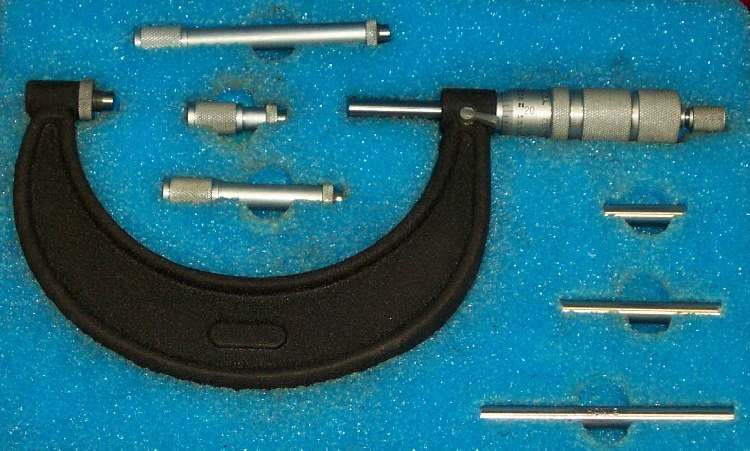
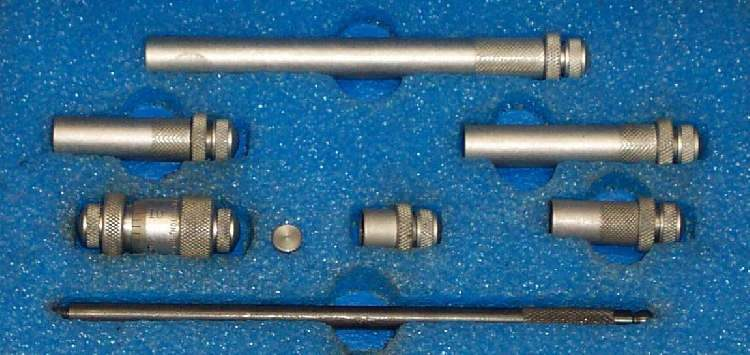

Engine repair means checking sizes: shaft diameters, widths, depths, piston skirt size and cylinder bore. A dial or digital caliper does this for everyday work. A micrometer measures finer and more exactly where the manual gives a tight limit. This page helps a learner choose the right tool and use it well. The limits themselves are always in the bike's manual.
You need
- A caliper for lengths, widths, depths and rough diameters.
- Outside micrometers for shafts and piston skirts. These come in a set of ranges, or as one large frame with different anvils.
- An inside micrometer or bore gauge for cylinder bores and bearing holes.
- Clean rag. Parts and tools must be clean and at the same temperature.
Steps
- Wipe the jaws or anvils and the part clean.
- Close the tool on nothing and check the reading is zero. If not, adjust it as the tool maker states, or note the error and allow for it.
- For a caliper, close the jaws gently on the part. Read the scale while the tool is still on the part.
- For a micrometer, turn the thimble using the ratchet at the end so that every reading has the same light pressure.
- Measure at more than one place and in two directions, at right angles, to find wear and out-of-round.
- For a bore, measure near the top, middle and bottom of the stroke, since wear is not even.
- Write each reading down at once. Compare with the manual.
Check your work
- The same measurement repeats to the same value when taken twice.
- Readings from the caliper and the micrometer agree within the caliper's accuracy.
Care
- Never use a micrometer on a rough or dirty surface.
- Do not squeeze. Over-tightening gives false low readings.
- Wipe clean and store with a thin film of light oil, jaws or anvils slightly apart.
When to go to a workshop
- If a measure is close to the wear limit and the tool is not accurate enough, a workshop with a bore gauge can confirm it: Measure piston-to-cylinder clearance and bore wear.